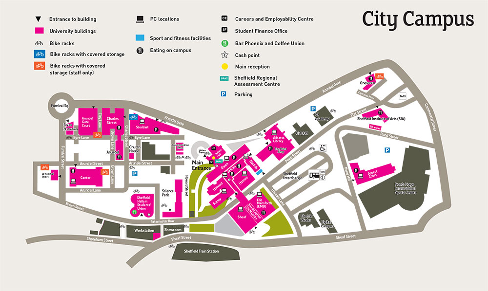

Academic Information
- Faculties - Links to all the Faculty and Departmental Offices with information on staff, courses and events.
- A to Z List of Departments - Departmental Homepages.
- Library and Learning Resource Services - Information on LLRS services, access to the on-line catalogue,
links to external academic resources and guides to using IT to support your studies.
- Our Academic Partners - Information on College links.
- Research - links to the Research Centres, guide to research opportunities and help on finding research funding.
Administrative Support
- Academic Registry - Information provided by the Academic Registry, including Academic Calendars, Academic Regulations,
Module Catalogue, information on award ceremonies and tuition fees.
- Student Guide to Regulations - General and Academic Regulations, World Wide Web Code of Practice, Rules Governing the Use of LLRS facilities.
Student Services
- Advisory and Counselling Centre - academic advice, help for international students, careers guidance, personal counselling, student
loans and access funds and support for students with disabilities/learning difficulties.
- Health Centre - guide to the services provided by the University Health Centre.
- Multi-Faith Centre - information regarding the work of the Multi-Faith Centre.
- Pre-School Centre - contact information regarding the University's child care facilities.
- Sports Centre - booking arrangements and facilities.

University Services
- Catering Services - guide to the catering facilities on campus.
- Printing Services - information regarding services provided for students.
- Student Accommodation Services - guide to University Accommodation and help on finding accommodation in the private sector.
Life at the University
- Arts Centre - what's on at the University's arts venues.
- Students' Union - events and services provided by the Students' Union.
- University Guide - a full guide to life at the University.
- Campus Navigator - help with finding your way around campus.
Communications
- Noticeboards - General, Classified, Events and Alumni noticeboards.
- Student Email Search - database of student email addresses
- Staff Search - database of staff email addresses.
- A to Z List of Services - full A to Z list of University Services.